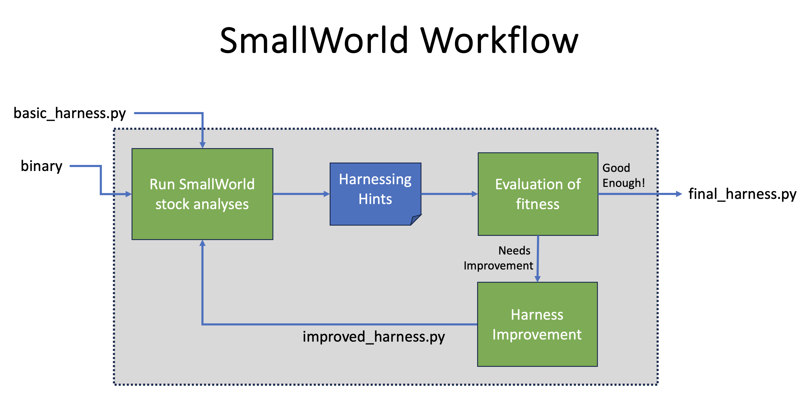

SmallWorld at a Glance¶
SmallWorld is an environment for streamlined harnessing of binaries for the purpose of dynamic analysis. We imagine that you have code that you got from somewhere. You may want to analyze it statically, with Ghidra or IDA Pro. But, at some point, you are likely to want to actually run the code and even do so under some kind of analysis that tracks or collects information programmatically. For example, you may want to do some coverage-guided fuzzing. Or run a PANDA taint analysis. A prerequisite for running code is harnessing the code, meaning arranging for its various inputs and initial conditions and dynamic requirements to be met.
SmallWorld includes a suite of APIs to facilitate harnessing. Additionally, SmallWorld has analyses tailored to guiding the creation of harnesses, e.g., which emulate code under inspection to determine what its “inputs” are and how they are used by the code, indicating type and semantics.
SmallWorld is written in Python, and currently makes use of Unicorn, Capstone, and angr. Unicorn is used to emulate various instruction set architectures. More specifically, however, SmallWorld uses Unicorn for micro-execution, an analytic technique in which short stretches of code are run under possibly random initial conditions to determine inputs and outputs, structure layouts, etc. Capstone provides disassembly support, and angr is used to provide a variety of harnessing-guiding hints.
The basic workflow for SmallWorld is as follows
Start with a stock harnessing script that assumes little or nothing about the code and its requirements to run.
Run stock SmallWorld analyses against the code using current harness to generate hints explaining what is wrong or incomplete about the way it runs given the harness.
Examine hints either manually or with higher level analyses and use that as a guide refining the harnessing script.
Iterate until the harness is stable and/or some other fitness criterion is met.
{kind=link}

Now that you have a harness for the code, you can use it to for any purpose that requires actually executing the code, which could be fuzzing, debugging, or reverse engineering. As SmallWorld matures, we will add examples of these applications built out of code harnessed using the APIs and informed by the analyses in this repository.